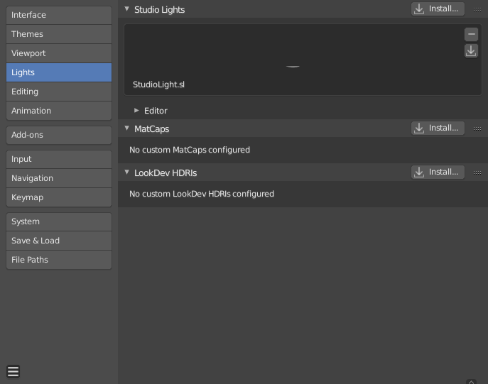

Lights¶

Blender Preferences Lights section.
Studio Lights¶
Studio Lights are used to illuminate 3D viewport during Solid View and will not be rendered.
Unlike lights in the scene, the lighting direction follows the viewport orientation.
Editor¶
There are up to four virtual light sources.
The Light icons allow the user to enable or disable individual lights. At least one of the four lights must remain enabled for the 3D View. The lights are equal, except for their direction and color. You can control the direction of the lights, as well as their diffuse and specular colors.
- Light
- Use Light
- Toggles the specific light.
- Diffuse
- This is the constant color of the light.
- Specular
- This is the highlight color of the light.
- Smooth
Smooth the shading from this light.
This has the effect of lighting to be less direct.
- Direction
The direction of the light, (see 方向按钮).
The direction of the light will be the same as shown at the sphere surface.
- Ambient Color
- The color of unlit areas.